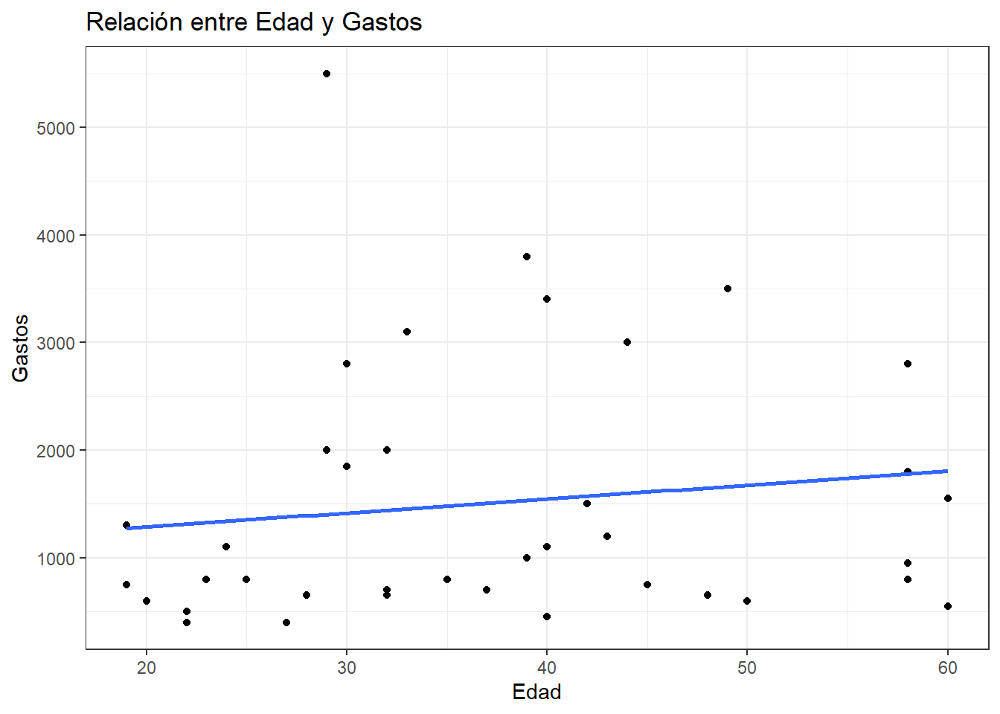
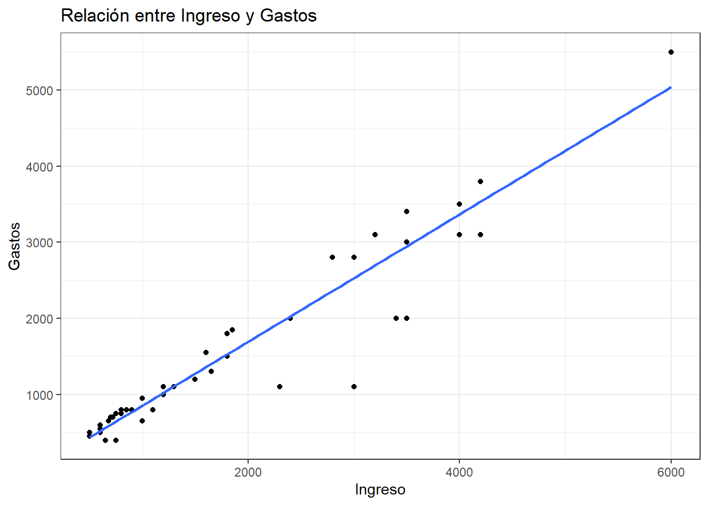
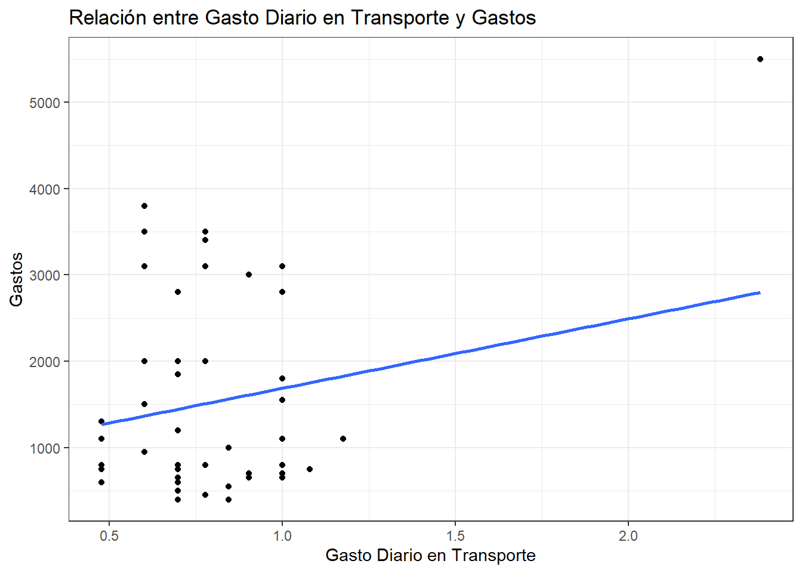
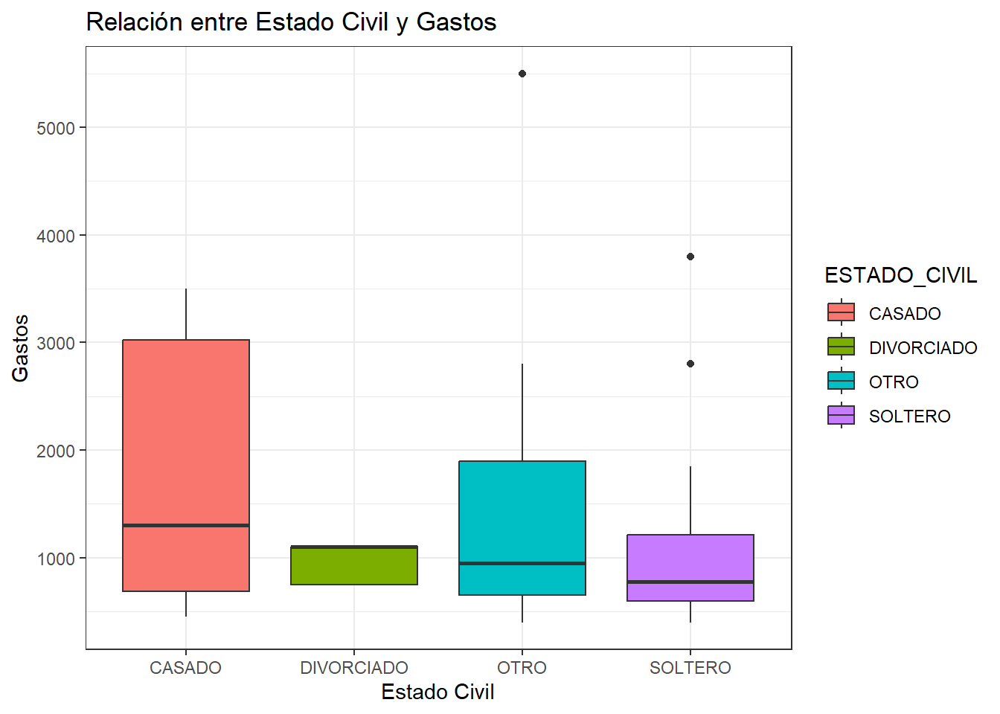
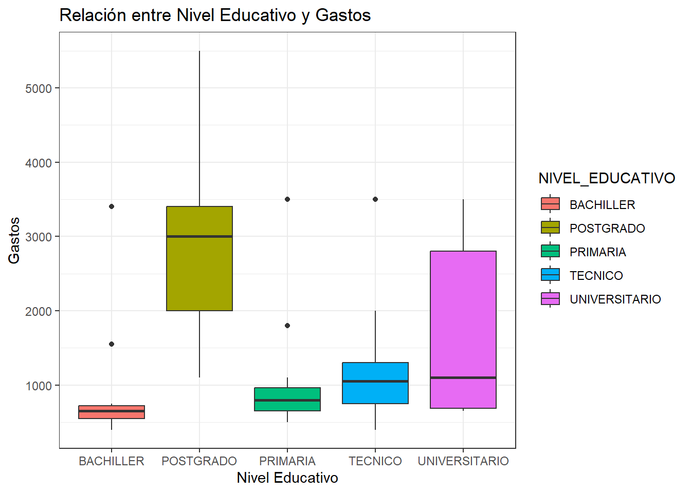

Código
# Cargar las librerías necesarias
library(readxl)
library(dplyr)
library(ggplot2)# Cargar las librerías necesarias
library(readxl)
library(dplyr)
library(ggplot2)# Cargar los datos
datos <- read_excel("datos.xlsx", "DATOS")# Convertir las variables categóricas a factores
datos$GENERO <- as.factor(datos$GENERO)
datos$ESTADO_CIVIL <- as.factor(datos$ESTADO_CIVIL)
datos$NIVEL_EDUCATIVO <- as.factor(datos$NIVEL_EDUCATIVO)
datos$VIVIENDA <- as.factor(datos$VIVIENDA)
datos$CALIFICACION_SERVIVCIO_TRANSPORTE <- as.factor(datos$CALIFICACION_SERVIVCIO_TRANSPORTE)
# Crear el modelo de regresión con variables dummy
modelo <- lm(GASTOS ~ EDAD + INGRESO + TIEMPO_RECORRIDO + GASTO_DIARIO_TRANSPORTE +
PERSONAS_HOGAR + PERSONAS_EDAD_TRABAJAR + NUMERO_PERSONAS_EDAD_TRABAJAR +
GENERO + ESTADO_CIVIL + NIVEL_EDUCATIVO + VIVIENDA + CALIFICACION_SERVIVCIO_TRANSPORTE,
data = datos)
# Resumen del modelo
summary(modelo)
Call:
lm(formula = GASTOS ~ EDAD + INGRESO + TIEMPO_RECORRIDO + GASTO_DIARIO_TRANSPORTE +
PERSONAS_HOGAR + PERSONAS_EDAD_TRABAJAR + NUMERO_PERSONAS_EDAD_TRABAJAR +
GENERO + ESTADO_CIVIL + NIVEL_EDUCATIVO + VIVIENDA + CALIFICACION_SERVIVCIO_TRANSPORTE,
data = datos)
Residuals:
Min 1Q Median 3Q Max
-830.7 -136.6 -3.5 115.3 503.5
Coefficients:
Estimate Std. Error t value
(Intercept) -600.77777 275.17436 -2.183
EDAD 14.03937 4.18215 3.357
INGRESO 0.88277 0.04665 18.923
TIEMPO_RECORRIDO 4.89765 3.40949 1.436
GASTO_DIARIO_TRANSPORTE 3.59583 1.46659 2.452
PERSONAS_HOGAR -33.94802 48.08591 -0.706
PERSONAS_EDAD_TRABAJAR 44.65104 61.35354 0.728
NUMERO_PERSONAS_EDAD_TRABAJAR -26.96695 69.71457 -0.387
GENEROMUJER 54.35439 98.47960 0.552
ESTADO_CIVILDIVORCIADO -438.23220 165.13187 -2.654
ESTADO_CIVILOTRO -278.54499 128.71363 -2.164
ESTADO_CIVILSOLTERO 243.82694 132.89044 1.835
NIVEL_EDUCATIVOPOSTGRADO -352.77670 165.41520 -2.133
NIVEL_EDUCATIVOPRIMARIA -101.40049 117.65459 -0.862
NIVEL_EDUCATIVOTECNICO -2.94376 136.16047 -0.022
NIVEL_EDUCATIVOUNIVERSITARIO -87.64773 130.20051 -0.673
VIVIENDASI -133.66388 82.02190 -1.630
CALIFICACION_SERVIVCIO_TRANSPORTEEXCELENTE 48.09456 148.17859 0.325
CALIFICACION_SERVIVCIO_TRANSPORTEMALO 108.44407 164.89105 0.658
CALIFICACION_SERVIVCIO_TRANSPORTEMUY_BUENO 213.13077 178.05910 1.197
CALIFICACION_SERVIVCIO_TRANSPORTEREGULAR 181.19854 159.06382 1.139
Pr(>|t|)
(Intercept) 0.03252 *
EDAD 0.00130 **
INGRESO < 2e-16 ***
TIEMPO_RECORRIDO 0.15552
GASTO_DIARIO_TRANSPORTE 0.01683 *
PERSONAS_HOGAR 0.48264
PERSONAS_EDAD_TRABAJAR 0.46929
NUMERO_PERSONAS_EDAD_TRABAJAR 0.70012
GENEROMUJER 0.58283
ESTADO_CIVILDIVORCIADO 0.00993 **
ESTADO_CIVILOTRO 0.03403 *
ESTADO_CIVILSOLTERO 0.07098 .
NIVEL_EDUCATIVOPOSTGRADO 0.03662 *
NIVEL_EDUCATIVOPRIMARIA 0.39184
NIVEL_EDUCATIVOTECNICO 0.98282
NIVEL_EDUCATIVOUNIVERSITARIO 0.50315
VIVIENDASI 0.10788
CALIFICACION_SERVIVCIO_TRANSPORTEEXCELENTE 0.74652
CALIFICACION_SERVIVCIO_TRANSPORTEMALO 0.51300
CALIFICACION_SERVIVCIO_TRANSPORTEMUY_BUENO 0.23554
CALIFICACION_SERVIVCIO_TRANSPORTEREGULAR 0.25869
---
Signif. codes: 0 '***' 0.001 '**' 0.01 '*' 0.05 '.' 0.1 ' ' 1
Residual standard error: 262.7 on 67 degrees of freedom
Multiple R-squared: 0.9579, Adjusted R-squared: 0.9454
F-statistic: 76.26 on 20 and 67 DF, p-value: < 2.2e-16El modelo de regresión lineal tiene como objetivo explicar cómo las distintas variables predictoras (cuantitativas y categóricas) influyen en los gastos de las personas. Cada variable tiene un coeficiente que mide su efecto promedio sobre los GASTOS .
Cada variable predictora o causal (variable x), ya sea cuantitativa o categórica, tiene un coeficiente que refleja su relación con los GASTOS.
El coeficiente de una variable cuantitativa indica cuánto cambian los GASTOS en promedio por cada unidad adicional de esa variable, manteniendo las demás constantes. Ejemplo: Si el coeficiente de INGRESO es 0.5, significa que, por cada unidad adicional de ingreso, los GASTOS aumentan en promedio en 0.5 unidades.
Determinan la significancia estadística de las variables en el modelo. En general, si el valor p de una variable es menor a 0.05, se considera que esa variable tiene un impacto estadísticamente significativo sobre los GASTOS .
Si una variable tiene un valor p alto (mayor que 0.05), significa que no se puede afirmar con suficiente confianza que tiene un impacto significativo en los GASTOS .
Resultado del modelo:
Las variables con un efecto significativo en los gastos son: La edad, Los ingresos, Gasto diario de transporte, Estado civil divorciado y otro (el de soltero se acerca), nivel educativo de posgrado. Estas variables tienen un valor-p menos a 0,05, por eso se les coloca un asterísco que identifica su significancia para el modelo de gastos. En este sentido un modelo lineal pare este caso podría ser:
GASTOS = (14.03937*EDAD) + (0.88277*INGRESO) + (4.89765*GASTO_DIARIO_TRANSPORTE) - (438.23*ESTADO_CIVIL_DIVORCIADO) - (278.54*ESTADO_CIVIL_OTRO) - (352.77*NIVEL_EDUCATIVO_POSTGRADO) + ERROR.
Esto indica que a mayor edad, más ingresos, más uso de transporte diario, hay más gastos y que estos disminuyen si las personas se divorcian o su estado civil es categoría “otro” o con la adquisición de postgrados. el error es la parte del modelo que no se puede explicar y que puede estar asociada a variables exógenas no medidas.
# Convertir las variables categóricas a factores
datos$GENERO <- as.factor(datos$GENERO)
datos$ESTADO_CIVIL <- as.factor(datos$ESTADO_CIVIL)
datos$NIVEL_EDUCATIVO <- as.factor(datos$NIVEL_EDUCATIVO)
datos$VIVIENDA <- as.factor(datos$VIVIENDA)
datos$CALIFICACION_SERVIVCIO_TRANSPORTE <- as.factor(datos$CALIFICACION_SERVIVCIO_TRANSPORTE)
# Crear el modelo de regresión con las variables solicitadas
modelo_significativo <- lm(GASTOS ~ EDAD + INGRESO + GASTO_DIARIO_TRANSPORTE +
ESTADO_CIVIL + NIVEL_EDUCATIVO, data = datos)
# Resumen del modelo para verificar las variables significativas
summary(modelo_significativo)
Call:
lm(formula = GASTOS ~ EDAD + INGRESO + GASTO_DIARIO_TRANSPORTE +
ESTADO_CIVIL + NIVEL_EDUCATIVO, data = datos)
Residuals:
Min 1Q Median 3Q Max
-854.74 -113.51 1.63 151.89 586.94
Coefficients:
Estimate Std. Error t value Pr(>|t|)
(Intercept) -294.04748 147.18703 -1.998 0.04927 *
EDAD 9.69729 3.07226 3.156 0.00228 **
INGRESO 0.86928 0.03429 25.349 < 2e-16 ***
GASTO_DIARIO_TRANSPORTE 2.97448 1.28995 2.306 0.02381 *
ESTADO_CIVILDIVORCIADO -479.11831 100.47539 -4.769 8.61e-06 ***
ESTADO_CIVILOTRO -166.67487 96.76798 -1.722 0.08901 .
ESTADO_CIVILSOLTERO 159.99787 76.50342 2.091 0.03979 *
NIVEL_EDUCATIVOPOSTGRADO -312.45617 140.90282 -2.218 0.02954 *
NIVEL_EDUCATIVOPRIMARIA -63.46494 108.17341 -0.587 0.55912
NIVEL_EDUCATIVOTECNICO -35.07298 113.66881 -0.309 0.75849
NIVEL_EDUCATIVOUNIVERSITARIO -67.46014 113.58925 -0.594 0.55432
---
Signif. codes: 0 '***' 0.001 '**' 0.01 '*' 0.05 '.' 0.1 ' ' 1
Residual standard error: 260.1 on 77 degrees of freedom
Multiple R-squared: 0.9526, Adjusted R-squared: 0.9464
F-statistic: 154.7 on 10 and 77 DF, p-value: < 2.2e-16# Graficar las relaciones de las variables seleccionadas con GASTOS
# Gráfico 1: EDAD vs GASTOS
ggplot(datos, aes(x = EDAD, y = GASTOS)) +
geom_point() +
geom_smooth(method = "lm", se = FALSE) +
labs(title = "Relación entre Edad y Gastos",
x = "Edad",
y = "Gastos") +
theme_bw()
# Gráfico 2: INGRESO vs GASTOS
ggplot(datos, aes(x = INGRESO, y = GASTOS)) +
geom_point() +
geom_smooth(method = "lm", se = FALSE) +
labs(title = "Relación entre Ingreso y Gastos",
x = "Ingreso",
y = "Gastos") +
theme_bw()
# Gráfico 3: GASTO_DIARIO_TRANSPORTE vs GASTOS
ggplot(datos, aes(x = log10(GASTO_DIARIO_TRANSPORTE), y = GASTOS)) +
geom_point() +
geom_smooth(method = "lm", se = FALSE) +
labs(title = "Relación entre Gasto Diario en Transporte y Gastos",
x = "Gasto Diario en Transporte",
y = "Gastos") +
theme_bw()
# Gráfico 4: ESTADO_CIVIL vs GASTOS
ggplot(datos, aes(x = ESTADO_CIVIL, y = GASTOS, fill = ESTADO_CIVIL)) +
geom_boxplot() +
labs(title = "Relación entre Estado Civil y Gastos",
x = "Estado Civil",
y = "Gastos") +
theme_bw()
# Gráfico 5: NIVEL_EDUCATIVO vs GASTOS
ggplot(datos, aes(x = NIVEL_EDUCATIVO, y = GASTOS, fill = NIVEL_EDUCATIVO)) +
geom_boxplot() +
labs(title = "Relación entre Nivel Educativo y Gastos",
x = "Nivel Educativo",
y = "Gastos") +
theme_bw()